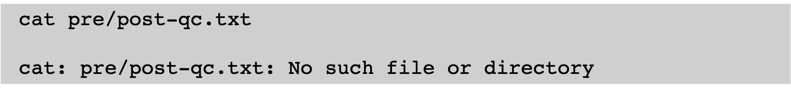
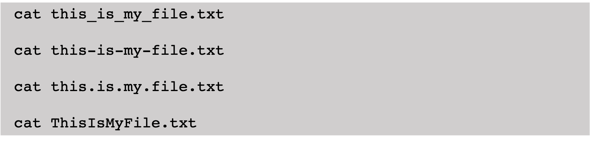
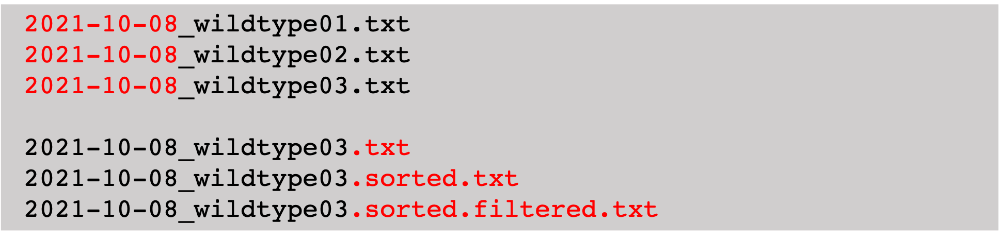
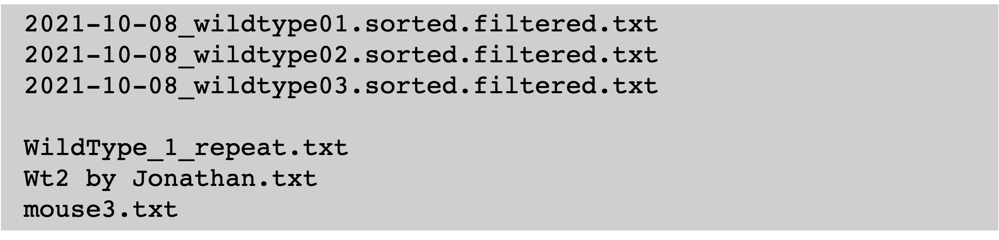
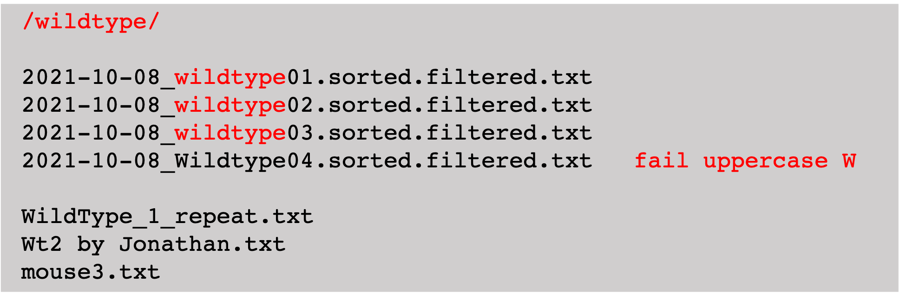
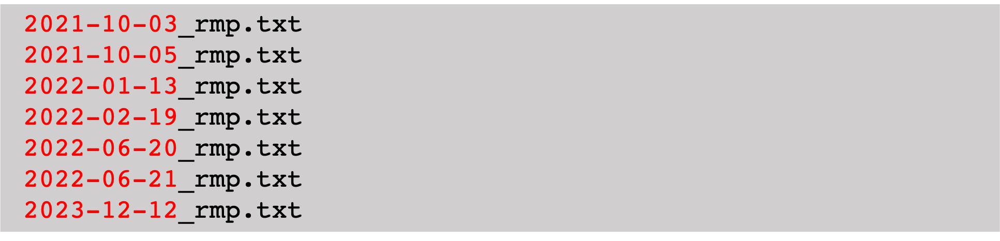

How to Name Files
Contributors
 Robert Andrews
Robert Andrews
 Branka Franicevic
Branka Franicevic
 Sara Morsy
Sara Morsy
 Krzysztof Poterlowicz
Krzysztof Poterlowicz
Learning Objective and Notes
-
To be able to create filenames that are machine-readable
-
To understand how filenames can be used to group files
-
To be able to create filenames that are human-readable
-
Although we refer to file naming, information in this RDMbite refers also to directory/folder naming
Speaker Notes
-
In this RDM bite you will learn to how name files so that they can be read and interpreted by yourself and others.
-
Filenames that are machine readable can be easily read and interpreted by code.
-
Human readable filenames help you and others record and understand the contents of a file.
-
You will also learn that filenames can contain punctuation enabling groups of files to be ordered and searched.
Characters in Filenames to Avoid: Special Characters
.left[Special characters to avoid]
.left[Three special characters that can be used to delimit words in your filename]
Speaker Notes
-
A filename can be both human and machine readable and as a general rule the use of special characters is avoided.
-
So, what is a special character?
-
A special character is any character that isn’t a number or a letter.
-
Although we avoid the use of special characters in filenames, we will explain later that the use of the full stop, the underscore, and the minus sign are commonplace and useful.
Characters in Filenames to Avoid: Special Characters
.left[The forward slash (/) denotes a directory]

Speaker Notes
- Special characters are often used by programming languages to denote a special property or function.
- One example you may know is the forward slash which denotes a directory.
- A filename containing a forward slash character causes problems.
- In this example the Unix cat command is used to read the contents of a file.
- Here the command throws an error because the filename contains a forward slash.
- The command instead tries to look for a file called post qc dot txt under a directory called pre.
Characters to Avoid: Spaces
.left[Space characters are interpreted as spaces between different files]

Speaker Notes
- A space character can also cause problems in a filename even though it is used frequently
- A file with a single space character in its filename can sometimes be interpreted by a script as two separate files.
- In this example there is a filename with three space characters.
- Where we try to read the contents of this using the cat command in Unix, we get an error because the cat command thinks there are four separate files.
Characters to Avoid: Spaces
.left[Using characters to separate words in a filename]

Speaker Notes
-
Spaces are best replaced by an underscore, dash or fullstop.
-
Alternatively you can use something called Camel case where words are delimited by uppercase characters.
-
In the examples on this slide, the Unix cat command will correctly attempt to read only one file.
Characters to Avoid: Spaces
.left[Using dot (.) underscore (_) and dash (-) in different contexts]

Speaker Notes
- There is a subtle convention some people follow when choosing between the underscore, dash and fullstop.
- The underscore is used to separate words or pieces of information.
- In this example wee have three files at the top containing data for an assay performed on three wildtype mice.
- Here there are two pieces of information about the sample, The first is a date and the second is a mouse number.
- These pieces of information are separated by the underscore.
- The minus sign is used also to separate the year, month, and day in the date part of the filename.
- Here we don’t use it in the same way as the underscore.
- This becomes useful again with where writing scripts to select and group files, but this is explained on the next slide.
- The full stop is again used differently.
- It delimits operations performed on the data in the file.
- At the bottom of this example there are 3 files containing data relating to a single sample.
- Each fille contains data processed as part of an analysis pipeline.
- The data is first sorted and then filtered.
Machine-readable Filenames

Speaker Notes
-
This slide shows three examples of structured filenames, and below them, examples where these filenames are no longer structured or machine readable.
-
Though the unstructured filenames are easily interpreted by a human, they cannot be interpreted by scripts.
Machine-readable Filenames

Speaker Notes
-
Regular expressions are common in programming and can they are used to locate individual files within a directory containing many files.
- The regular expression here in red at the top defines a pattern to search for.
-
In this case it is the word wild type.
-
The script uses this regular expression to locate and read all data in the wildtype files without the programmer needing to explicitly define the names of each of the input files.
- Note though that regular expressions are often case sensitive.
- A common mistake people make is mixing upper and lower case.
- Since a capital W is used in the fourth of these files, it would be ignored by the script.
Using Numbers at the Beginning of Filenames
.left[Padding with zeros]
{kind=link}
Speaker Notes
-
Have you ever had the problem where you have numbered files in a directory and found that they aren’t displayed in numerical order?
-
This is because computers generally list files alphabetically.
-
To avoid this it is good practice when numbering files to put the number first in the filename and prefix with a zero.
Using Dates at the Beginning of Filenames
.left[Placing dates at the beginning of the filename]

.left[ISO standard]

Speaker Notes
-
The same is true when using dates and being able to view files in chronological order.
- The date is put at the beginning of the filename and uses the ISO standard.
-
The ISO standard puts the year before the month and then day.
- By using this standard files will always be listed in chronological order.
- You may have noticed that software commonly uses this date format: year, month and day.
Human-readable Filenames
.left[Bad]
.left[Better]
Speaker Notes
-
Human readable file naming helps a researcher to workout the contents of a file.
-
Here we have 2 very common examples where the filename tells us nothing about its contents.
-
One way you can make a filename human readable is by using words describing the data where these words are delimited by underscores.
-
Another way is to use the fullstop to describe the successive transformation performed on a dataset.
-
With the first of these better examples a person is given a date, a cohort title and the data type.
- In the second example we can tell we have a file with data transformed by a workflow.
- Here we have a BAM file from genome sequencing.
- Reads have been marked, filtered and then sorted by chromosome position.
File Versioning
.left[Bad]
.left[Better]
Speaker Notes
-
File versioning as part of a filenaming is not recommended.
-
Instead look at our RDMbite on file versioning and file versioning systems.
- The problem when using version numbers in filenaming comes when these filles are shared.
-
A person has no way of knowing whether the version they have is current.
- If you are going to use file versioning in file naming though, use an uppercase V to ensure machine readability.
- Also use leading zeros on the version number.
Thank you!
This material is the result of a collaborative work. Thanks to the Galaxy Training Network and all the contributors! This material is licensed under the Creative Commons Attribution 4.0 International License.
This material is licensed under the Creative Commons Attribution 4.0 International License.